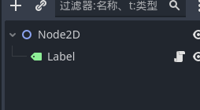
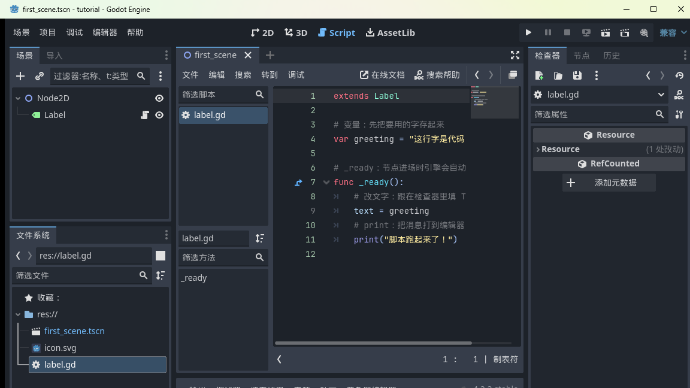
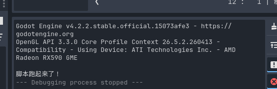
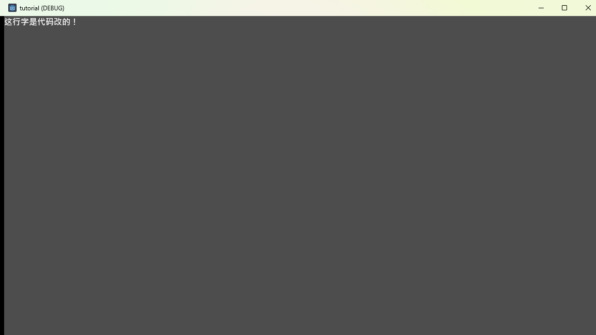

大家好，我是「山岚的运维笔记」。
讲返段我嘅黑历史先。当年学引擎，我一直觉得"检查器里能改的，代码纯属多余"，鼠标杆啥都能干。直到想做一个"每秒自己变颜色的方块"才明白：鼠标点再多，也只能设一个静态值。
前几篇全部系点鼠标，今日代码正式上场。目标就一个：畀节点听代码嘅话。
还是老朋友 first_scene：Node2D 底下一个 Label。
选中 Label，右键选「附加脚本」，路径保持默认 res://label.gd，点创建。场景树里 Label 后面多了个小图标——"这个节点有脚本了"：

同时编辑器自动切到 Script 工作区，打开 label.gd。
小知识：脚本后缀 .gd，纯文本，跟场景文件 .tscn 一样住在项目文件夹。
新脚本自带几行模板，第一次睇落真系几吓人。别慌，整个换成下面这段，一共 12 行：

extends Label
# 变量：先把要用的字存起来
var greeting = "这行字是代码改的！"
# _ready：节点进场时引擎会自动调用的函数
func _ready():
# 改文字：跟在检查器里填 Text 效果一样
text = greeting
# print：把消息打到编辑器的输出面板
print("脚本跑起来了！")逐行拆：
extends Label：声明"这脚本是给 Label 用的"，这样才能直接用 Label 的东西。
var greeting = "..."：定义一个变量——贴了名的存储空间，把字存进去随取随用。
func _ready():：定义函数。_ready 是 Godot 约定好的特殊函数，节点一进场，引擎自动调用，不用你喊。
text = greeting：把变量赋给 Label 的 text 属性，等价于在检查器填 Text。
print("...")：往编辑器输出面板打消息，调试神器，以后天天见。
缩进用 Tab，GDScript 靠缩进认代码块，跟 Python 一个脾气，缩错就报错，手要稳。
Ctrl+S 存脚本（脚本都要存档！忘存就跑旧代码，经典陷阱），按 F5。
证据一，编辑器底部输出面板：

「脚本跑起来了！」——呢句系 print 干嘅活。游戏一启动，_ready 就自己跑。
证据二，游戏窗口本身：

左上角从 Hello, Godot! 变成了「这行字是代码改的！」——检查器填的 Text 被 _ready 里的代码覆盖了。谁后说话听谁的：先读检查器的值，再跑你的代码。
到呢步，你已经识"用代码改节点"喇。所有游戏逻辑——移动、计分、敌人 AI——都系从呢个口子长出嚟嘅。
今日识咗三个朋友：变量（存东西嘅盒）、函数（打包好嘅动作）、print（探照灯）。外加一个关键认知：_ready 只在进场时跑一次。
咁想让代码每一帧都跑（让文字转圈、方块自己行）点算？_ready 唔够用。
下一篇：《Godot 入门实战 05：精灵与素材》，先给场景添置"能看见的东西"。
人生第一段 GDScript 写完喇，抵一个点赞同在看；想跟埋全程嘅，关注「山岚的运维笔记」。有问必回。
下一篇见。
（配套工程在 GitHub 的 Boxman 仓库 tutorial 分支，每篇一个进度 tag。）